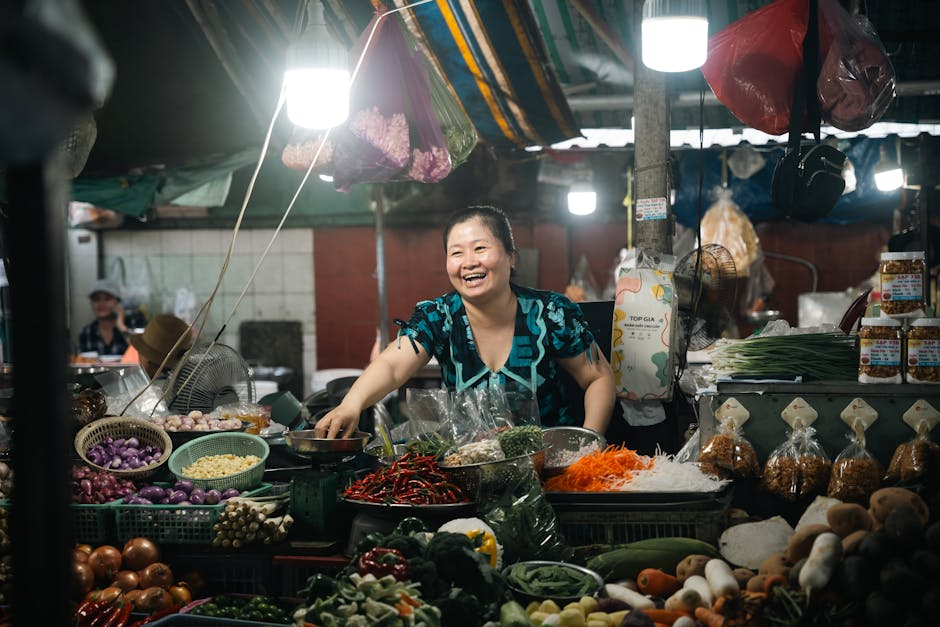
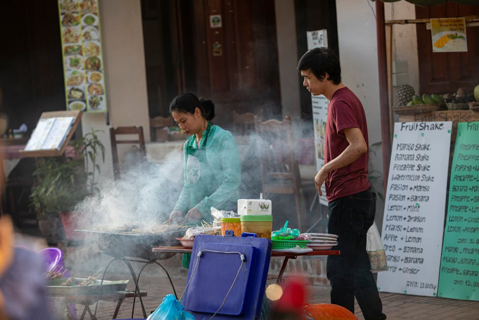
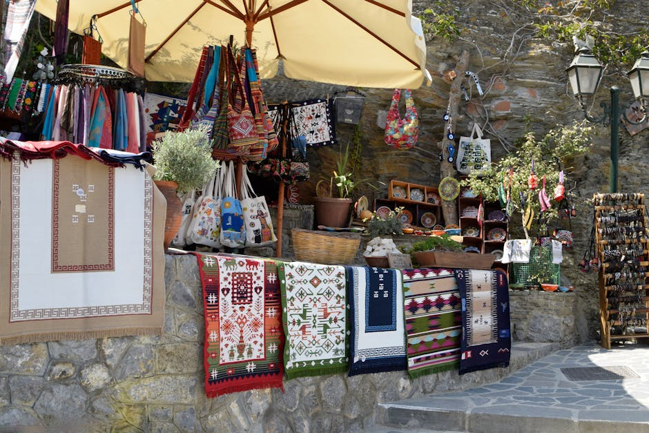

Esplora l'Anima del Territorio: Sagre, Eventi e Mercatini Locali
Caddy Studio ti guida alla scoperta delle tradizioni più autentiche. Trova le migliori sagre paesane, festival musicali, eventi culturali e fiere locali vicino a te.
Scopri gli Eventi
Chi Siamo e la Nostra Missione
Il tuo portale eventi e sagre locali
Benvenuti su Caddy Studio, il portale eventi e sagre locali di riferimento per chi ama vivere il territorio. La nostra missione è valorizzare le tradizioni, l'artigianato e l'enogastronomia promuovendo le iniziative di Eventi e Mercatini. Che tu stia cercando sagre paesane per gustare i prodotti tipici, fiere locali per lo shopping artigianale, o concerti dal vivo, selezioniamo per te le migliori opportunità.
Crediamo fermamente che gli eventi culturali e i festival musicali siano il cuore pulsante delle nostre comunità. Unisciti a noi per non perdere mai un'occasione di festa, incontro e scoperta nel tuo territorio.
Cosa dicono di noi
Le esperienze di chi ha scoperto le migliori sagre paesane e fiere locali grazie al nostro portale eventi.
"Grazie a questo portale ho scoperto sagre paesane fantastiche a pochi chilometri da casa. Organizzazione dei contenuti perfetta e sempre aggiornata, una vera guida al territorio!"
"Uso sempre Caddy Studio per trovare i festival musicali e i concerti estivi. È diventato il mio punto di riferimento irrinunciabile per i weekend."
"Le informazioni sulle fiere locali e gli eventi culturali sono precise e utilissime. Un servizio davvero eccellente per chi ama vivere il proprio territorio."
I Nostri Servizi per il Territorio
Tutto ciò che ti serve per scoprire le migliori iniziative e non perdere neanche un evento nella tua zona.
Sagre Paesane e Fiere Locali
Scopri i sapori autentici e le tradizioni culinarie attraverso le migliori sagre paesane e le fiere locali della tua regione. Dallo street food tradizionale ai mercatini dell'antiquariato, ti offriamo una panoramica completa per organizzare i tuoi weekend all'insegna del gusto.

Festival Musicali e Concerti
Resta sempre aggiornato sui prossimi concerti e festival musicali all'aperto. Dalle band emergenti locali ai grandi nomi della musica, trova l'evento perfetto per le tue serate all'insegna del divertimento, della condivisionione e della buona musica dal vivo.

Eventi Culturali e Mostre
Arricchisci il tuo tempo libero esplorando eventi culturali, mostre d'arte, rievocazioni storiche, spettacoli teatrali e mercatini dell'artigianato. Un viaggio continuo nella cultura, nelle arti manuali e nella storia dei nostri borghi e delle nostre città d'arte.

Domande Frequenti
Come posso trovare le sagre paesane nella mia zona?
Il nostro portale ti permette di sfogliare le iniziative per regione e provincia. Aggiorniamo regolarmente la lista delle sagre paesane e delle fiere locali basandoci sulle comunicazioni di Eventi e Mercatini, per garantirti informazioni fresche e accurate per i tuoi weekend.
Il portale include anche festival musicali e concerti?
Assolutamente sì. Oltre all'enogastronomia, copriamo ampiamente l'intrattenimento dal vivo, includendo festival musicali, concerti estivi e rassegne musicali locali per offrirti un panorama completo del divertimento sul territorio.
Gli eventi culturali e le fiere locali sono gratuiti?
Molte fiere locali, mercatini e sagre prevedono l'ingresso gratuito, mentre consumazioni o acquisti sono a pagamento. Alcuni eventi culturali specifici o grandi concerti potrebbero richiedere un biglietto d'ingresso. Ti consigliamo sempre di verificare le modalità di accesso nella scheda dettagliata di ciascun evento.
Posso segnalare un evento non presente sul sito?
Certamente. Incoraggiamo le segnalazioni da parte degli utenti e delle pro loco. Puoi utilizzare il nostro modulo di contatto per suggerire fiere locali, sagre o eventi culturali che ritieni meritino di essere promossi sul nostro portale.
Come vengono selezionati gli eventi promossi?
Selezioniamo con cura le iniziative basandoci sulle proposte del nostro fornitore originale, Eventi e Mercatini, dando priorità a quegli appuntamenti che valorizzano realmente le tradizioni locali, l'artigianato di qualità e le espressioni artistiche e culturali del territorio.
Restiamo in Contatto
Hai domande su fiere locali, vuoi segnalare sagre paesane o cerchi informazioni su specifici eventi culturali? Compila il modulo e il nostro team ti risponderà il prima possibile.
Sede Operativa
Eventi in Italia
Copertura su tutto il territorio nazionale
Orari di Assistenza
Lunedì - Venerdì
09:00 - 18:00